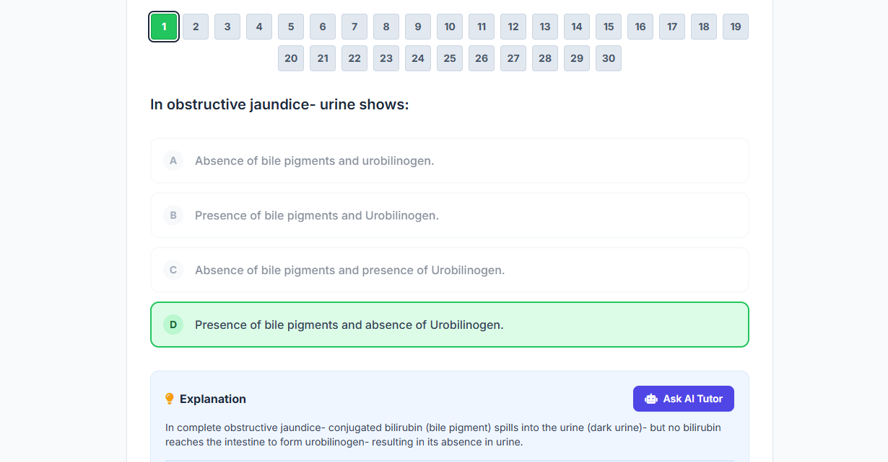
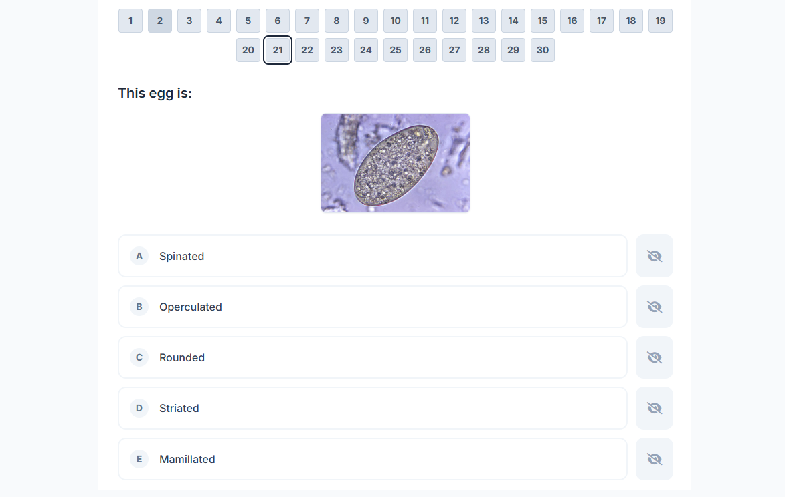
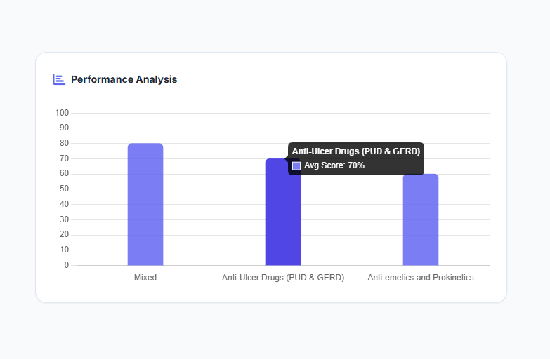
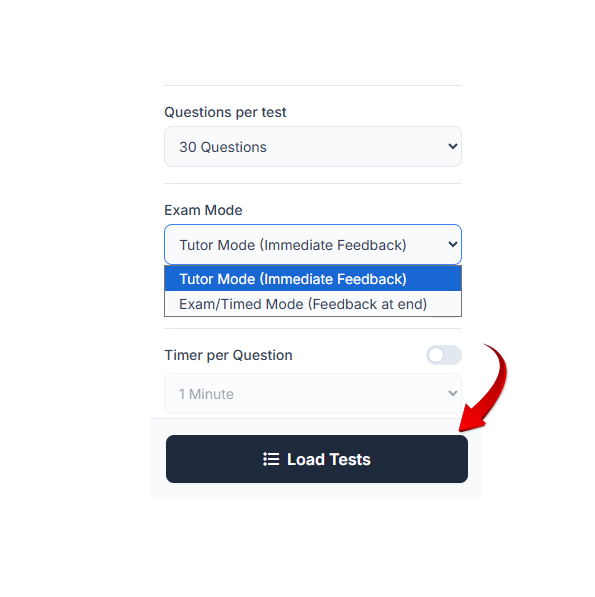
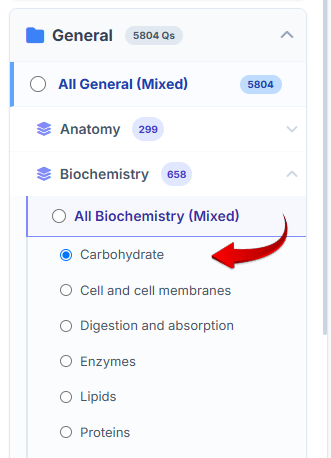

اختيار الباقة

الدفع متاح وسهل عبر فودافون كاش
اختر الباقة واضغط على زر الواتساب للتواصل وإتمام التفعيل الفوري.
نظام تقييم طبي شامل يحاكي امتحانات البورد العالمية. بنوفرلك بنك أسئلة ضخم ومتطور مصمم خصيصاً لطلاب الطب. مع لوحة تحليلات دقيقة لمعرفة نقاط الضعف فى كل مادة وكل شابتر.



كل أداة في المنصة تم تطويرها لتحل مشكلة حقيقية تواجه طالب الطب أثناء المذاكرة.
تقدر تعمل امتحان من 40 لحد 200 سؤال، بـ مؤقت شامل للمحاكاة الواقعية.
تقدر تختار الفروع الأكاديمية أو الإكلينيكية وتعمل اختبار واحد يحاكي ضغط الامتحان.
عشان يهمنا انك تفهم مش تحفظ ، دمجنا الذكاء الاصطناعي عشان يشرحلك السبب بأسلوب طبي مبسط كأن معاك معيد مخصص ليك انت.
نظام يحفظ كل سؤال تغلط فيه. عشان تعمل امتحاناً من أخطائك وتراجع عليها وتحلها تاني
لا نكتفي بإعطائك درجة نهائية. بنعرض لك تحليل دقيق لمستواك في كل فرع وكل شابتر لتعرف أين يجب أن تركز مجهودك قبل الامتحان.
قائمة شاملة بمميزات المنصة التي صُممت خصيصاً لطلاب الطب.
وضع الـ Tutor للشرح الفوري، ووضع الـ Exam لإخفاء الإجابات حتى النهاية.
مؤقت منفصل لكل سؤال، أو مؤقت شامل للامتحانات ككل عشان تتدرب على الامتحانات.
علّم على الأسئلة الصعبة لتعود إليها، مع تنبيه ذكي قبل تسليم الامتحان.
ظلل الكلمات المفتاحية باللون الأصفر لتسهيل قراءة الاسئلة الطويلة.
اشطب الإجابات الخاطئة لتقليل التشتت والتركيز على الخيارات المتبقية.
احفظ الأسئلة المهمة بنقرة لتكوين بنك أسئلتك الخاص لمراجعة ليلة الامتحان.
اختر بدقة (الموديول > المادة > الشابتر) للحصول على أسئلة مخصصة جداً.
اضطررت للمغادرة؟ أوقف الامتحان واكمل حله في وقت لاحق من نفس النقطة.
بنك أسئلة متجدد باستمرار لمواكبة أحدث التغييرات في المناهج.
بساطة في الاستخدام، عمق في التحصيل.

حدد عدد الاسئلة، واختار نظام التدريب والوقت، وانطلق.

اختر الموديول، حدد المدة، اختار الدرس.
راجع الإحصائيات الدقيقة، وقم بإنشاء امتحان جديد من أخطائك فقط.
تجارب حقيقية من زملاء استخدموا المنصة.
باقات تناسب جميع احتياجاتك مع طرق دفع محلية سهلة.
جرب المنصة وتأكد من جودتها قبل الاشتراك.
الوصول الكامل الذي تحتاجه للتفوق وكسر حاجز الخوف.